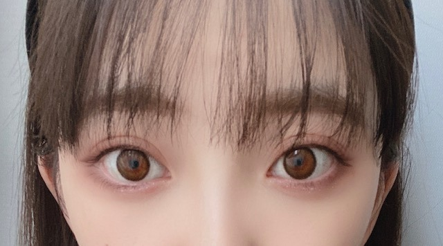

2020/0515Friはぐれっこ
じゃん
リモート撮影してみました
白黒の世界で生きてみました
悪い顔
tops ZARA
denim CLANE
choker DIOR
色がついた世界

アディクションの
赤みブラウンのアイシャドウ
にしてみました
写真集発売まであと12日! ✨
公式Twitter
@horimiona2nd
企画連載...もぐもぐ未央奈
もしています
公式Instagram
@horimiona_2nd
両方でたくさん盛り上げていきたいなと
思ってますので是非みなさん
覗きに来てくださいねヽ(*・ω・*)ﾉ
今日発売のFRIDAYの感想もお聞かせください!
では
2020/05/15 19:36
コメント(338)
未央奈ちゃん〜！
モノトーンコーデ、めちゃめちゃ可愛い♡
お肌きれいでしかも白いから憧れです、、、、
写真集楽しみん
いつもありがとう〜
大好き！！！
モノトーンコーデ、めちゃめちゃ可愛い♡
お肌きれいでしかも白いから憧れです、、、、
写真集楽しみん
いつもありがとう〜
大好き！！！
ブログ更新ありがとう！最近暑くなってきたし、お互い体調に気を付けて頑張ろう！！次も絶対見るからね！
ブログ更新ありがとうございます！
似合いすぎやないかーい！
カチューシャ可愛すぎる！
似合いすぎやないかーい！
カチューシャ可愛すぎる！
未央奈ちゃんブログ更新ありがとう！
ギンガムチェックのトップスめちゃくちゃ可愛くて超好き、、♡
お店も教えてくれてありがとう チェックしてみるね( ¨̮ )
写真集ほんとに楽しみ！！
毎日のように情報が解禁されるの嬉しいです
いつもありがとう、次のブログもたのしみにしてるね！
ギンガムチェックのトップスめちゃくちゃ可愛くて超好き、、♡
お店も教えてくれてありがとう チェックしてみるね( ¨̮ )
写真集ほんとに楽しみ！！
毎日のように情報が解禁されるの嬉しいです
いつもありがとう、次のブログもたのしみにしてるね！
未央奈ちゃんブログ更新ありがとー
どんな格好しても可愛いし似合うって羨ましすぎます‼️
どんなに頑張っても未央奈ちゃんみたいに可愛くなれないけど
恐縮ながらメイクとか参考にさせてもらってます‼️
これからの活躍も期待しています
頑張ってください‼️ 応援しています
大好きです❤️
どんな格好しても可愛いし似合うって羨ましすぎます‼️
どんなに頑張っても未央奈ちゃんみたいに可愛くなれないけど
恐縮ながらメイクとか参考にさせてもらってます‼️
これからの活躍も期待しています
頑張ってください‼️ 応援しています
大好きです❤️
モグモグ未央奈最高 ⤴⤴＼(^_^)／
スイカの種を出すところまで悶絶超可愛ゆい‼(●^o^●)ヤラレました‼寝る前に善いものが視れて良い一日って感じです(≧∇≦)ありがとう
スイカの種を出すところまで悶絶超可愛ゆい‼(●^o^●)ヤラレました‼寝る前に善いものが視れて良い一日って感じです(≧∇≦)ありがとう
未央奈ありがとう！
写真可愛すぎて惚れるよ
体調はどうかな？元気にしてね！
写真集楽しみだー
またね！
写真可愛すぎて惚れるよ
体調はどうかな？元気にしてね！
写真集楽しみだー
またね！
未央奈〜！！
ブログ更新ありがとう
スイカ食べてるもぐもぐ未央奈最高
毎日インスタとTwitter楽しみなの
いつも見てて楽しい
次の更新も待ってるね〜！！
ブログ更新ありがとう
スイカ食べてるもぐもぐ未央奈最高
毎日インスタとTwitter楽しみなの
いつも見てて楽しい
次の更新も待ってるね〜！！
ブログ更新ありがとう！
モバメの時からすごく可愛いファッションだなって思ってたからブランド教えてくれて嬉しい！甘いモノトーンファッションが大好きで、それを大好きな未央奈ちゃんが着ているというのが最高すぎる…
赤みブラウンのメイクも可愛い♡
もぐもぐ未央奈の連載いつも可愛くて癒されてる⸜(*ˊᵕˋ*)⸝
インスタもブログもモバメもたくさん更新してくれて元気貰えるし、写真集の発売が日に日に待ち遠しくなってる︎☺︎
FRIDAY探したんだけどコロナの影響なのかどこも置いてなくて…また日を空けてリベンジします！
モバメの時からすごく可愛いファッションだなって思ってたからブランド教えてくれて嬉しい！甘いモノトーンファッションが大好きで、それを大好きな未央奈ちゃんが着ているというのが最高すぎる…
赤みブラウンのメイクも可愛い♡
もぐもぐ未央奈の連載いつも可愛くて癒されてる⸜(*ˊᵕˋ*)⸝
インスタもブログもモバメもたくさん更新してくれて元気貰えるし、写真集の発売が日に日に待ち遠しくなってる︎☺︎
FRIDAY探したんだけどコロナの影響なのかどこも置いてなくて…また日を空けてリベンジします！
堀ちゃん！更新ありがとう！
リモート撮影！
特に白黒！いいですね！！
白黒だとオードリーヘップバーン
に近い雰囲気で堀ちゃんに合ってる！
カチューシャもやっぱり似合ってる！
デニム履いてる堀ちゃん
あんまし見ないから、個人的に
嬉しいショットです！！！
また、リモート撮影期待してます！
もぐもぐ未央奈見てるよ〜！
メロン食べてる堀ちゃんと
もんぞーのツーショット最高です笑！
明らかにスイカ持ってて
いちごって言っちゃう堀ちゃんも
らしさ全開でそういうとこ大好きです！
まだまだもぐもぐ未央奈
楽しみにしてるよ！
次回の更新も楽しみにしてます！
では！
おやすみおな〜！！
リモート撮影！
特に白黒！いいですね！！
白黒だとオードリーヘップバーン
に近い雰囲気で堀ちゃんに合ってる！
カチューシャもやっぱり似合ってる！
デニム履いてる堀ちゃん
あんまし見ないから、個人的に
嬉しいショットです！！！
また、リモート撮影期待してます！
もぐもぐ未央奈見てるよ〜！
メロン食べてる堀ちゃんと
もんぞーのツーショット最高です笑！
明らかにスイカ持ってて
いちごって言っちゃう堀ちゃんも
らしさ全開でそういうとこ大好きです！
まだまだもぐもぐ未央奈
楽しみにしてるよ！
次回の更新も楽しみにしてます！
では！
おやすみおな〜！！
更新ありがとう〜！！
全部可愛い！！
白黒未央奈なんかすごい笑笑
体調気をつけてね！！
では
全部可愛い！！
白黒未央奈なんかすごい笑笑
体調気をつけてね！！
では
知ってましたか？
巨人とジャイアンツって
同じ何だって
僕は今日知りました
巨人とジャイアンツって
同じ何だって
僕は今日知りました
こんにちは。
写真集発売が近づいてきてワクワクしますね。悩みましたが、楽天ブックスのアザーカバーの表情が特に素敵でそちらで買う事に決めました。
blog写真のスタイリングもメイクも素敵で、自分の魅せ方が上手だなぁと思いました！
来週ANNにも出られると聞きました。ラジオ好きとしては非常に楽しみです。こういう状況下でのプロモーション中々大変だと思いますが、応援しております！
写真集発売が近づいてきてワクワクしますね。悩みましたが、楽天ブックスのアザーカバーの表情が特に素敵でそちらで買う事に決めました。
blog写真のスタイリングもメイクも素敵で、自分の魅せ方が上手だなぁと思いました！
来週ANNにも出られると聞きました。ラジオ好きとしては非常に楽しみです。こういう状況下でのプロモーション中々大変だと思いますが、応援しております！
白黒の世界、オシャレなモデル！って感じでいいね。
こういうのも似合うかもなぁ。
こういうのも似合うかもなぁ。
ブログ更新ありがとう！！
チョーカー堀ちゃん、カッコいい&似合いすぎです✨
チョーカー堀ちゃん、カッコいい&似合いすぎです✨
未央奈ブログ更新ありがと♡
いつ見てもかわいい♡
モノクロ世界でもかわいいし、色のあるほうも安定にかわいすぎる
コロナ期間どんどんかわいくなってない？
本当だいすき♡
はやくあいたいな！
あおいまる
いつ見てもかわいい♡
モノクロ世界でもかわいいし、色のあるほうも安定にかわいすぎる
コロナ期間どんどんかわいくなってない？
本当だいすき♡
はやくあいたいな！
あおいまる
堀ちゃんブログ更新ありがとう！
白黒の堀ちゃんも色がある堀ちゃんも
どっちもオシャレで可愛い(*´`)
もぐもぐ未央奈を見て毎回お腹が空きます
投稿が楽しみです
次のブログも楽しみにしています！
白黒の堀ちゃんも色がある堀ちゃんも
どっちもオシャレで可愛い(*´`)
もぐもぐ未央奈を見て毎回お腹が空きます
投稿が楽しみです
次のブログも楽しみにしています！
好き
写真集発売楽しみです！！
今日はずっと勉強してました！
学校に行けなくて自分で勉強を進めなければならないので、自分を律して頑張りたいと思います！
おやすみなさい。
今日はずっと勉強してました！
学校に行けなくて自分で勉強を進めなければならないので、自分を律して頑張りたいと思います！
おやすみなさい。
ヤッホー未央奈ブログありがとー綺麗な写真もありがとー❗写真集が５月27日、堀工事中が６月3日待ち遠しいですね～❗楽しみにして待ちます❗ところで大阪モデルてあってコロナがいい方向に向かったら万博記念公園の太陽の塔、大観覧車とか緑にライトアップされていますきのうからです‼️窓から見えています。巣籠もりから開放されて握手会とかイベントの開催が近づいています❗早く会いたいね❗もう少し体に気を付けて健康で頑張ってくださいね❗でわおやすみなさい❗
ブログ更新ありがとう！
本当に写真集発売が楽しみすぎる
料理作ってるもの教えてー
レシピを教えてください
本当に写真集発売が楽しみすぎる
料理作ってるもの教えてー
レシピを教えてください
こんばんは！
ブログ更新ありがとうございます。
相変わらずキレイですね。
今日も1日お疲れ様でした。
堀さんはいいSTAY HOMEを過ごせてますか？
やる事もそんなにないと思いがちですが、アイデア次第でまだまだ新しい自分を発見出来るようです。
というのも、自宅でボーッとテレビを見たりしていると、
特に世の中の女性たちは、たとえば新しいファッションを試してみたり、工夫した料理をさらに美味しくする動画をブログに載せたりして個性を発信するなど、ますますパワフルで充実したSTAY HOMEを過ごせている様子をよく見かけるからです。
たくましいですね…女の人は。
もちろん、堀さんもキレイでカッコいい女性の1人です
そんな女性たちの姿を耳にするたびに、ひとつの固定観念と変なプライドで変わるのを恐れてしまいがちになる部分が男として自分にはあるのかな、器が小さいなと少し反省したりもします。
いくつになったって、若々しさを追求出来る熱さを持っていたいものです。
まだまだ輝けますね、自分自身も。
頑張ります、自分自身も。
今回の『新型コロナウィルスの乱』といい、
ホント生きてると、色々ありますね〜。
当たり前かもしれませんが、
それぞれの生き方があって、
それぞれの考えがあります。
誰かをスゴイと思う一方で、
全く信じられないと思える人にも出会うかもしれません。
でも、
自分がどう生きるか、どう演じるかという見方で周りの様々な物事と向き合い始めた時、許し合い、守り合う強さを発見出来たりするんじゃないかなぁ〜って思ったりします。
なかなか明確な証拠が無いのでなんとも言えない部分もありますが…。
堀さんも色々とあるかと思いますが、頑張って下さいね
いつも応援してます。
お体に気をつけて。
ブログ更新ありがとうございます。
相変わらずキレイですね。
今日も1日お疲れ様でした。
堀さんはいいSTAY HOMEを過ごせてますか？
やる事もそんなにないと思いがちですが、アイデア次第でまだまだ新しい自分を発見出来るようです。
というのも、自宅でボーッとテレビを見たりしていると、
特に世の中の女性たちは、たとえば新しいファッションを試してみたり、工夫した料理をさらに美味しくする動画をブログに載せたりして個性を発信するなど、ますますパワフルで充実したSTAY HOMEを過ごせている様子をよく見かけるからです。
たくましいですね…女の人は。
もちろん、堀さんもキレイでカッコいい女性の1人です
そんな女性たちの姿を耳にするたびに、ひとつの固定観念と変なプライドで変わるのを恐れてしまいがちになる部分が男として自分にはあるのかな、器が小さいなと少し反省したりもします。
いくつになったって、若々しさを追求出来る熱さを持っていたいものです。
まだまだ輝けますね、自分自身も。
頑張ります、自分自身も。
今回の『新型コロナウィルスの乱』といい、
ホント生きてると、色々ありますね〜。
当たり前かもしれませんが、
それぞれの生き方があって、
それぞれの考えがあります。
誰かをスゴイと思う一方で、
全く信じられないと思える人にも出会うかもしれません。
でも、
自分がどう生きるか、どう演じるかという見方で周りの様々な物事と向き合い始めた時、許し合い、守り合う強さを発見出来たりするんじゃないかなぁ〜って思ったりします。
なかなか明確な証拠が無いのでなんとも言えない部分もありますが…。
堀さんも色々とあるかと思いますが、頑張って下さいね
いつも応援してます。
お体に気をつけて。
やっと外出が、規制解除されてきた
良かった
みおな
良かった
みおな
ブログ更新ありがとう！
どの写真も本当に可愛いですね！
もぐもぐ未央奈毎回楽しみに見させてもらってます！ありがとう！
写真集楽しみです！
どの写真も本当に可愛いですね！
もぐもぐ未央奈毎回楽しみに見させてもらってます！ありがとう！
写真集楽しみです！
こんばんは。ブログ更新ありがとうございます。
ウィンク可愛いです～。今日はコンビニに行かなかったので、明日FRIDAYさんチェックいたします。写真集の発売楽しみですね。
今日も日中は暑かったですね。もう春が終わり、夏になろうとしているようです。
ではまた。
ウィンク可愛いです～。今日はコンビニに行かなかったので、明日FRIDAYさんチェックいたします。写真集の発売楽しみですね。
今日も日中は暑かったですね。もう春が終わり、夏になろうとしているようです。
ではまた。
やっぱ未央奈かわいい
一回昔のメイクしてみるシリーズやってほしいです！
一回昔のメイクしてみるシリーズやってほしいです！
未央奈ちゃん、モノクロ表示も良いけど、俺はカラー表示の方が現実的だからこっちの方が良いかな！
もぐもぐ未央奈観たよ！ スイカを苺と勘違いしたことは
面白かった スイカは好きな人が多いけど俺はあんまり好きくないんだよね
スイカは好きな人が多いけど俺はあんまり好きくないんだよね (笑) 今度はもぐもぐ未央奈で苺を食べると良いかも！
(笑) 今度はもぐもぐ未央奈で苺を食べると良いかも！
またインスタライブもやってけることも楽しみにしてるね
では
もぐもぐ未央奈観たよ！ スイカを苺と勘違いしたことは
面白かった
またインスタライブもやってけることも楽しみにしてるね
では
ブログありがとー
未央奈ちゃん、ブログ更新ありがとう!
今回の写真を見ていたら、写真集が尚更楽しみになりました!
ANN、久しぶりのレコメンと久しぶりにラジオで未央奈ちゃんの声が聴けることを楽しみにしてます!!
今回の写真を見ていたら、写真集が尚更楽しみになりました!
ANN、久しぶりのレコメンと久しぶりにラジオで未央奈ちゃんの声が聴けることを楽しみにしてます!!
もう可愛すぎる。早く写真集買いたい！
君のいな〜い世界など〜
ども！
白黒の世界。かわいっ！
笑
悪い顔もなんかいい！笑 じゃれあってる感☺︎
ピース✌️
あ、大丈夫 流れた。今天気の子のサントラ聴いてる♪
めっちゃかわいい！！
チョーカーもよきよき。(^-^)
お、色がついた世界。もよき！
でた！カラコン♪
いぇーい！もう少し！！
もぐもぐ未央奈最高よ〜✨
FRIDAY！
こっちの親が新聞に堀ちゃんいたよ！って写真まで送ってきてくれたわ。笑
今日はもう本屋閉まってたからサタデーに買ってくるぅ〜ふふふ。
では〜僕にできることはまーだあるよ〜笑
ども！
白黒の世界。かわいっ！
笑
悪い顔もなんかいい！笑 じゃれあってる感☺︎
ピース✌️
あ、大丈夫 流れた。今天気の子のサントラ聴いてる♪
めっちゃかわいい！！
チョーカーもよきよき。(^-^)
お、色がついた世界。もよき！
でた！カラコン♪
いぇーい！もう少し！！
もぐもぐ未央奈最高よ〜✨
FRIDAY！
こっちの親が新聞に堀ちゃんいたよ！って写真まで送ってきてくれたわ。笑
今日はもう本屋閉まってたからサタデーに買ってくるぅ〜ふふふ。
では〜僕にできることはまーだあるよ〜笑
最近乃木坂を好きになって今どハマり中です！
写真集楽しみにしてます！
過去の乃木どこ乃木中を遡ってみてるのですが、堀さんが面白すぎてほんと好きって気持ちが沸いてます！
さっきちょうど、若月さんの脱マジメ計画の割り箸のくだりをやらされてる堀さん見て、腹抱えて笑いました！
こんなに可愛いのにユーモアも溢れてて惚れました！
写真集楽しみにしてます！
過去の乃木どこ乃木中を遡ってみてるのですが、堀さんが面白すぎてほんと好きって気持ちが沸いてます！
さっきちょうど、若月さんの脱マジメ計画の割り箸のくだりをやらされてる堀さん見て、腹抱えて笑いました！
こんなに可愛いのにユーモアも溢れてて惚れました！
ずっと応援し続けます。
未央奈～ こんにちは
連日のブログ更新ありがとうございます。
昨日の「のぎたび」に続き、今日は「ＦＲＩＤＡＹ」の発売日、表紙＆ミニブック、おめでとうございます。
表紙をめくると、いきなり飛び出した「袋とじ」、ワクワクしながら、ミシン目を破りました。
これが、南仏の写真の先行の部分なんですね。いよいよ写真集本番が楽しみです。もちろん予約済ですよ。
ところで、今日は「ＥＸ大衆」も買ってきました。絢音ちゃんが天使として登場してましたよ。
セブンに通う日々が続いていますが、そろそろ今年も「くじ」が始まるのかな？ こちらも楽しみです。
連日のブログ更新ありがとうございます。
昨日の「のぎたび」に続き、今日は「ＦＲＩＤＡＹ」の発売日、表紙＆ミニブック、おめでとうございます。
表紙をめくると、いきなり飛び出した「袋とじ」、ワクワクしながら、ミシン目を破りました。
これが、南仏の写真の先行の部分なんですね。いよいよ写真集本番が楽しみです。もちろん予約済ですよ。
ところで、今日は「ＥＸ大衆」も買ってきました。絢音ちゃんが天使として登場してましたよ。
セブンに通う日々が続いていますが、そろそろ今年も「くじ」が始まるのかな？ こちらも楽しみです。
二期生は他の期に比べて不遇で、とても悔しい思いをしてきたと思います。堀ちゃんが乃木中で2期生を紹介する企画を考えたり、インスタやブログなどのSNSでほぼ毎日のように投稿を続けたり、メイクを凄く勉強したり…堀ちゃんはとても優しくて努力家だと思います。これからも2期生を、乃木坂をよろしくお願いします。
…写真集楽しみにしてるね〜！
…写真集楽しみにしてるね〜！
今日もお疲れ様！
なんとなく白黒っていいよね！！
カチューシャめっちゃ可愛い！
眼がかーーーーーーーーーーわいい
RADWIMPSがサブスク解禁して喜んでいる自分です
"正解"とか"スパークル"とかめっちゃ好きなんですよ〜
すみません自分の話
フライデー買うぜ
ではでは
なんとなく白黒っていいよね！！
カチューシャめっちゃ可愛い！
眼がかーーーーーーーーーーわいい
RADWIMPSがサブスク解禁して喜んでいる自分です
"正解"とか"スパークル"とかめっちゃ好きなんですよ〜
すみません自分の話
フライデー買うぜ
ではでは
お疲れ様です、堀さん。
そうですね、バイオハザード7、その後いかがでしょうか？？
そうですね、個人的にはバイオハザード7、とくにマーガレット戦が苦手ですね
そうですね、スタジオジブリ、あまり詳しくはないのですけど、個人的には、もののけ姫が好きですね！
そうですね、とても個人的な話ですけど、そうですね、個人的にかなり聴いたなと思う曲、あまり行かないカラオケでも個人的にとくに歌った気がする曲が、GReeeeNの愛唄で、そうですね、この頃また愛唄に関係する投稿、You Tubeで観ることがありますね！
堀さんの悪い顔、なんといいますか、イタズラな魅力があって、そうですね、結局かわいいです
それでは、またなにかお話したいことがあればコメントします。
健康にはお気をつけてお過ごしください！
そうですね、バイオハザード7、その後いかがでしょうか？？
そうですね、個人的にはバイオハザード7、とくにマーガレット戦が苦手ですね
そうですね、スタジオジブリ、あまり詳しくはないのですけど、個人的には、もののけ姫が好きですね！
そうですね、とても個人的な話ですけど、そうですね、個人的にかなり聴いたなと思う曲、あまり行かないカラオケでも個人的にとくに歌った気がする曲が、GReeeeNの愛唄で、そうですね、この頃また愛唄に関係する投稿、You Tubeで観ることがありますね！
堀さんの悪い顔、なんといいますか、イタズラな魅力があって、そうですね、結局かわいいです
それでは、またなにかお話したいことがあればコメントします。
健康にはお気をつけてお過ごしください！
楽しみ！
更新ありがとう！
やっぱ目めちゃめちゃ綺麗ですね！
あと首輪が腕輪じゃないかぐらい細いのに入ってるのがすごい笑
やっぱ目めちゃめちゃ綺麗ですね！
あと首輪が腕輪じゃないかぐらい細いのに入ってるのがすごい笑
白黒でもみおなはかわいいこと間違いなし！
写真集楽しみだなぁ
早くきてくれないかな〜
showroomとかも期待してるよー
写真集楽しみだなぁ
早くきてくれないかな〜
showroomとかも期待してるよー
ギンガムチェック夏らしくていいね！
ほんとスタイル良すぎるオバケでどうしよう( ºΔº )(褒めてる)
私も夏に向けて未央奈ボディ目指してウエスト絞る、、
メイクも可愛い〜☺︎
カラーシャドウうまく使いこなせないから
参考にさせてもらう！ありがとう♡
ほんとスタイル良すぎるオバケでどうしよう( ºΔº )(褒めてる)
私も夏に向けて未央奈ボディ目指してウエスト絞る、、
メイクも可愛い〜☺︎
カラーシャドウうまく使いこなせないから
参考にさせてもらう！ありがとう♡
お疲れ様！
未央奈はZARA HOMEの物とかは買ったことあるのかな？
おススメとかあれば教えてほしいな〜。
未央奈はZARA HOMEの物とかは買ったことあるのかな？
おススメとかあれば教えてほしいな〜。
堀さん、こんばんは。
白黒でも肌の白さはちゃんとわかりますね。それに堀さんの瞳はいつまででも見てたいです。
FRIDAY見ました。旅行満喫する笑顔も緑の中で見透かすような表情も美しく透き通る肌も、どれも素晴らしかったです。最後のページの儚いけれど力強い眼差しが一番好きです。
堀さんは悪ガキ顔も可愛いですね。からかう姿も似合いそうです。
あと「君が好きだと叫びたい」僕も好きですよ。スラムダンクまで見てるとは流石ですね。ふんふんディフェンスとか左手はそえるだけとか要チェックやとかの懐かしいことを思い出しました。余談ですけどあさひなぐの電車でつり革つかまないのってスラムダンクの電車で空気椅子のオマージュだったのかなってふと思いました。
それとtwitterのスイカ食べてるの見ましたよ。音が良くて美味しそうでした。タネ出す流れは可愛すぎて面白くてデカめの声で笑ってしまいました。口からタネ出すのしたくないだろうな、画角から外れて出すんだろうなって思って見てたら熟考の末にカメラ目線でゆっくり出したから予想外で笑いました。
夏になったら僕もスイカ食べますね。今検索したらタネは規則的に12列に並んでるから真横に切って当たりをつけて30度ずつに切ればタネが露出して食べやすいそうです。半玉を買ったらやってみます。
白黒でも肌の白さはちゃんとわかりますね。それに堀さんの瞳はいつまででも見てたいです。
FRIDAY見ました。旅行満喫する笑顔も緑の中で見透かすような表情も美しく透き通る肌も、どれも素晴らしかったです。最後のページの儚いけれど力強い眼差しが一番好きです。
堀さんは悪ガキ顔も可愛いですね。からかう姿も似合いそうです。
あと「君が好きだと叫びたい」僕も好きですよ。スラムダンクまで見てるとは流石ですね。ふんふんディフェンスとか左手はそえるだけとか要チェックやとかの懐かしいことを思い出しました。余談ですけどあさひなぐの電車でつり革つかまないのってスラムダンクの電車で空気椅子のオマージュだったのかなってふと思いました。
それとtwitterのスイカ食べてるの見ましたよ。音が良くて美味しそうでした。タネ出す流れは可愛すぎて面白くてデカめの声で笑ってしまいました。口からタネ出すのしたくないだろうな、画角から外れて出すんだろうなって思って見てたら熟考の末にカメラ目線でゆっくり出したから予想外で笑いました。
夏になったら僕もスイカ食べますね。今検索したらタネは規則的に12列に並んでるから真横に切って当たりをつけて30度ずつに切ればタネが露出して食べやすいそうです。半玉を買ったらやってみます。
映画 カラーオブハート もこのブログのように白黒からカラーに変わります。とても画が綺麗でオススメです。
同じ岐阜県出身ってことが嬉しすぎる！
未央奈可愛すぎ✨
写真集めっちゃ楽しみに待ってます！
未央奈可愛すぎ✨
写真集めっちゃ楽しみに待ってます！
お疲れ様なのです└(ﾟ∀ﾟ└) (┘ﾟ∀ﾟ)┘
可愛いΣ(ノд<)
可愛いΣ(ノд<)
未央奈さんブログ更新ありがとうございます！！！！！！！！白黒写真も、色付き写真も、もぐもぐ写真も全部可愛いです！！！！！！！
写真集発売まであと12日……うぅ、楽しみ過ぎて待ちきれないよぉぉぉ！
ﾊﾞｲﾊﾞｲ(ヾ(´・ω・｀)
写真集発売まであと12日……うぅ、楽しみ過ぎて待ちきれないよぉぉぉ！
ﾊﾞｲﾊﾞｲ(ヾ(´・ω・｀)
いつもブログありがとう、いい人だ


もぐもぐみおなイイネ


モノクロな感じいいね〜
昔っぽい感じがめっちゃ好き！
1枚目の威嚇?してるみたいな表情カワイイ!
次のブログも楽しみにしてるね!
これからも応援してるよ!
体調には気をつけてね!
by未央奈推しのブラックコーヒー